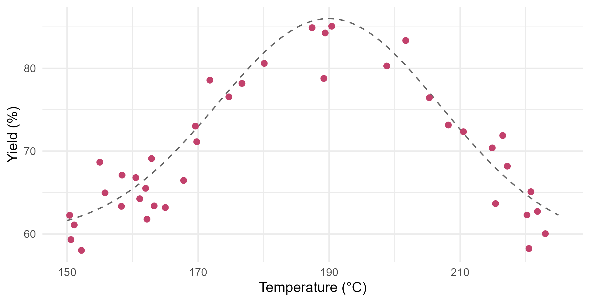
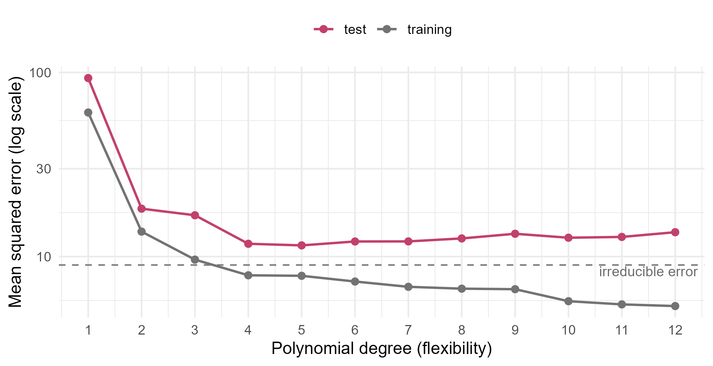
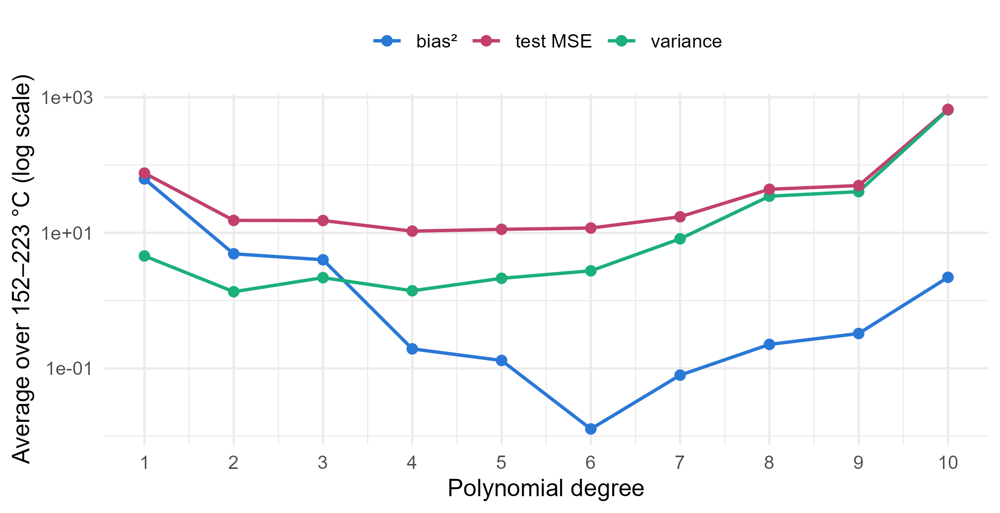

Module 7 · Lesson 1 of 14 Week 104 of 160 About 5–7 hours
What is statistical learning?
Learning a function from data
Meet the idea at the heart of machine learning: an unknown function that links inputs to an output, estimated from data. Fit models of growing flexibility to 40 pilot-plant runs, watch the training error fall while the error on new runs falls and then rises, and take that error apart into bias, variance and noise. Then meet the Bayes classifier, the best any classifier could ever do.
Machine learning sounds like something new, but most of it is statistics you’ve already met, with a change of emphasis. In regression, you fitted a model and asked what its coefficients mean. In machine learning, the main question is usually different: how well will this model predict data it has never seen? That one question changes how you choose models, how you judge them, and how flexible you let them be.
This module follows the course STAT 584 and its textbook, An Introduction to Statistical Learning. It’s about statistical learning: methods that learn, from data, the relationship between some inputs and an output. The first lesson sets up the ideas that every later lesson uses, on the simplest possible example: one input, one output, 40 runs.
Welcome to Module 7! Machine learning is just statistics that cares a lot about one thing: getting the next prediction right. Let’s see why that’s harder than it sounds.
In this lesson you’ll:
- write a prediction problem as Y = f(X) + \varepsilon, and tell prediction from inference
- tell supervised from unsupervised learning
- fit models of increasing flexibility, and compare their training and test errors
- see the irreducible error: the part no model can remove
- split a model’s test error into bias and variance, by simulation
- meet the Bayes classifier, and the best error rate any classifier could reach
The function behind the data
The pilot plant ran a new catalyst at 40 temperatures between 150 and 225 °C and measured the yield of each run:
grid <- data.frame(temp_C = seq(150, 225, by = 0.5))
ggplot(runs, aes(temp_C, yield_pct)) +
geom_line(data = transform(grid, yield_pct = f_true(temp_C)), linetype = "dashed", color = "grey40") +
geom_point(color = "#C2416C", size = 2) +
labs(x = "Temperature (°C)", y = "Yield (%)") +
theme_minimal(base_size = 12)
Statistical learning assumes that the output Y (yield) depends on the input X (temperature) through some fixed but unknown function f, plus random error:
Y = f(X) + \varepsilon .
f is the systematic part: the yield you’d get, on average, at each temperature. \varepsilon is everything else: measurement error, small differences in the feed, things nobody recorded. It has mean zero, and it’s independent of X. Statistical learning is a set of ways to estimate f from data, written \hat f.
There are two reasons to want \hat f:
- Prediction. You want good values of \hat Y = \hat f(X) for new inputs, and you don’t much care what \hat f looks like inside. A soft sensor that predicts a lab result from process tags is a prediction problem.
- Inference. You want to understand f: which inputs matter, in which direction, by how much. “How much does yield fall for each degree above the optimum?” is an inference question.
Modules 2 and 3 were mostly about inference. This module is mostly about prediction, which frees you to use models whose insides are hard to read, as long as they predict well.
One unusual thing about these runs: they’re simulated, so the true f is known. It’s the dashed curve, with its optimum at 190 °C, and the error has a standard deviation of 3 points. In real life, you never know f. Here, knowing it lets you measure things that are normally invisible. The setup code below defines it as f_true(), and it also makes 2,000 new runs from the same process: data that no model gets to see while it’s being fitted.
Your turn. Fit a straight line and a quadratic to the 40 runs, and compare their training mean squared error, the average squared residual.
A quadratic is a polynomial of degree 2.
line <- lm(yield_pct ~ temp_C, data = runs)
quad <- lm(yield_pct ~ poly(temp_C, 2), data = runs)
c(line = mean(resid(line)^2), quadratic = mean(resid(quad)^2))60.6 for the line, 13.7 for the quadratic. The line can’t bend, so it misses the peak entirely: its slope, 0.06 points per °C, says that temperature hardly matters, which is badly wrong. The quadratic bends once, and it does much better. poly(temp_C, 2) uses orthogonal polynomials, which give the same fit as temp_C + I(temp_C^2) but are numerically safer at high degrees.
Supervised and unsupervised learning
In the pilot runs, every input comes with its output: each temperature has a measured yield. A method can learn f by comparing its predictions with the right answers. That’s supervised learning, and it covers regression (a numeric output, like yield) and classification (a categorical output, like the cause of an alarm).
Sometimes there’s no output at all: just inputs, and a question about their structure. Do these 48 crude oils fall into natural groups? Does the plant run in a few distinct modes? That’s unsupervised learning: there’s no right answer to learn from, so there’s no simple error rate to judge it by. Lessons 12 and 13 cover it.
Your turn. Label each of the four tasks below “supervised” or “unsupervised”.
Ask: is there a known right answer for each past example, to learn from?
c(
predict_melt_index = "supervised",
group_crude_oils = "unsupervised",
diagnose_alarm = "supervised",
find_operating_modes = "unsupervised"
)The melt index and the alarm causes have known answers in the past data: supervised (regression and classification). The crude oils and the operating modes don’t: unsupervised. There’s also a middle ground, semi-supervised learning, where only some examples have answers, as when the lab tests only one batch in ten.
Flexibility and the training error
The line and the quadratic are two points on a scale of flexibility. A polynomial of degree d has d + 1 coefficients, and the higher d is, the more shapes it can take. Flexible models can follow f more closely. They can also follow the noise.
Your turn. Compute the training MSE for polynomials of degree 1 to 12.
The degree is the function’s argument, d.
train_mse <- sapply(1:12, function(d) {
fit <- lm(yield_pct ~ poly(temp_C, d), data = runs)
mean(resid(fit)^2)
})
round(train_mse, 2)60.58, 13.67, 9.63, 7.91, 7.86, … down to 5.39 at degree 12. It never goes up: a degree-12 polynomial contains every lower-degree polynomial as a special case, so least squares can always fit the training data at least as well. If the training error were the measure, the most flexible model would always win. But the error variance is 9 (an SD of 3), so a training MSE of 5.39 is better than the truth: the model has started fitting the noise.
The test error
What matters for prediction is the error on new data: the test MSE, \text{Ave}\big(y_0 - \hat f(x_0)\big)^2 over runs (x_0, y_0) that weren’t used to fit \hat f. Here, the 2,000 new runs play that part.
Your turn. Compute the test MSE for each degree, and find the degree with the smallest.
Predict for the new runs: predict(fit, new_runs).
test_mse <- sapply(1:12, function(d) {
fit <- lm(yield_pct ~ poly(temp_C, d), data = runs)
mean((new_runs$yield_pct - predict(fit, new_runs))^2)
})
round(test_mse, 2)
which.min(test_mse)Degree 5 wins, with a test MSE of 11.50. The line’s test MSE is 93.2, the quadratic’s 18.2, and past degree 5 the test error creeps up again, to 13.56 at degree 12, while the training error keeps falling. That U-shape is the most important picture in machine learning.
Here are both curves together:
mse <- t(sapply(1:12, function(d) {
fit <- lm(yield_pct ~ poly(temp_C, d), data = runs)
c(training = mean(resid(fit)^2), test = mean((new_runs$yield_pct - predict(fit, new_runs))^2))
}))
df <- data.frame(degree = rep(1:12, 2), mse = c(mse), set = rep(c("training", "test"), each = 12))
ggplot(df, aes(degree, mse, color = set)) +
geom_hline(yintercept = 9, linetype = "dashed", color = "grey50") +
geom_line(linewidth = 0.8) + geom_point(size = 2) +
scale_y_log10() + scale_x_continuous(breaks = 1:12) +
scale_color_manual(values = c(training = "grey45", test = "#C2416C"), name = NULL) +
annotate("text", x = 11.5, y = 8.3, label = "irreducible error", size = 3.5, color = "grey40") +
labs(x = "Polynomial degree (flexibility)", y = "Mean squared error (log scale)") +
theme_minimal(base_size = 12) + theme(legend.position = "top")
A model whose training error is much lower than its test error is overfitting: it has learned patterns in the training data, the noise, that won’t come back. A model that’s too rigid, like the line, is underfitting: both errors are high. The art is to find the flexibility in between, and the next lesson shows how to do it without a convenient set of 2,000 extra runs.
The irreducible error
Even a perfect estimate, \hat f = f, wouldn’t predict perfectly, because each new run has its own \varepsilon. For any \hat f, the expected test error at an input x_0 splits into two parts:
E\big(Y - \hat f(x_0)\big)^2 = \underbrace{\big(f(x_0) - \hat f(x_0)\big)^2}_{\text{reducible}} + \underbrace{\text{Var}(\varepsilon)}_{\text{irreducible}} .
Better models shrink the first part. Nothing shrinks the second: it’s the noise floor. The only way below it is to measure more inputs, which might explain some of what is now noise.
Your turn. Find the test MSE of the true function itself, on the new runs.
The true function is f_true().
mean((new_runs$yield_pct - f_true(new_runs$temp_C))^2)9.47, close to the true error variance, 3^2 = 9 (2,000 runs are a sample too). The best model’s test MSE, 11.50, is only about 2 above this floor: most of its error is noise that no model could remove. In real problems, you don’t know the floor, but replicate measurements can estimate it: the lab’s repeatability is a floor for any soft sensor.
Bias and variance
Why does the test error go down and then up? Imagine running the 40-run study again and again, each time with new runs, and fitting the same kind of model each time. At a given temperature, \hat f(x_0) would come out different every time. Its expected squared error splits into three parts:
E\big(Y_0 - \hat f(x_0)\big)^2 = \underbrace{\big(E\hat f(x_0) - f(x_0)\big)^2}_{\text{bias}^2} + \underbrace{\text{Var}\big(\hat f(x_0)\big)}_{\text{variance}} + \text{Var}(\varepsilon).
- Bias is how far the model’s average fit is from the truth. A straight line through a curved f is biased however many runs you collect.
- Variance is how much the fit changes from one dataset to the next. A degree-12 polynomial chases each dataset’s noise, so it changes a lot.
More flexibility lowers the bias and raises the variance. The test error is their sum plus the noise, so it’s lowest where the trade-off balances. That’s the bias-variance trade-off.
Your turn. Simulate 300 new 40-run studies, fit a polynomial of degree d to each, and predict the yield at 205 °C. Estimate the squared bias and the variance for degree 1, then change it to 5 and 10.
Start with d <- 1. The check wants degree 10’s answer.
d <- 10
set.seed(7013)
pred <- replicate(300, {
t <- runif(40, 150, 225)
y <- f_true(t) + rnorm(40, 0, 3)
predict(lm(y ~ poly(t, d)), data.frame(t = 205))
})
c(bias2 = (mean(pred) - f_true(205))^2, variance = var(pred))At 205 °C:
| Degree | Bias² | Variance |
|---|---|---|
| 1 | 3.78 | 4.24 |
| 5 | 0.28 | 1.15 |
| 10 | 0.00 | 2.76 |
The line is biased: on average it predicts 1.9 points too low at 205 °C. Degree 10 is unbiased, but its predictions scatter more than degree 5’s. Degree 5 has the smallest sum. The line’s variance is surprisingly high too: a rigid model that’s wrong swings around, because where it misses depends on where each study’s runs happened to fall.
Averaged over the whole temperature range, the same simulation draws the classic picture:
bv_all <- function(d, n = 40, reps = 200) {
set.seed(7014)
g <- seq(152, 223, length.out = 50)
P <- replicate(reps, { t <- runif(n, 150, 225); y <- f_true(t) + rnorm(n, 0, 3); predict(lm(y ~ poly(t, d)), data.frame(t = g)) })
c(bias2 = mean((rowMeans(P) - f_true(g))^2), variance = mean(apply(P, 1, var)))
}
tab <- t(sapply(1:10, bv_all))
df <- data.frame(degree = rep(1:10, 3), value = c(tab[, 1], tab[, 2], tab[, 1] + tab[, 2] + 9),
part = rep(c("bias²", "variance", "test MSE"), each = 10))
ggplot(df, aes(degree, value, color = part)) +
geom_line(linewidth = 0.8) + geom_point(size = 2) +
scale_y_log10() + scale_x_continuous(breaks = 1:10) +
scale_color_manual(values = c(`bias²` = "#2a78d6", variance = "#1baf7a", `test MSE` = "#C2416C"), name = NULL) +
labs(x = "Polynomial degree", y = "Average over 152–223 °C (log scale)") +
theme_minimal(base_size = 12) + theme(legend.position = "top")
The variance explodes at high degrees because high-degree polynomials go wild near the ends of the data, where there are few runs to hold them down. Over the whole range, degree 4 balances best, with an expected test MSE of about 10.6.
NoteGo deeper: deriving the decomposition
Write \hat f = \hat f(x_0), f = f(x_0), and Y_0 = f + \varepsilon, with \varepsilon independent of the training data (and so of \hat f). Then
E(Y_0 - \hat f)^2 = E(f - \hat f)^2 + 2E\big[\varepsilon (f - \hat f)\big] + E\varepsilon^2 = E(f - \hat f)^2 + \sigma^2,
because the middle term is 2E[\varepsilon]\,E[f - \hat f] = 0. Now add and subtract E\hat f:
E(f - \hat f)^2 = (f - E\hat f)^2 + E(\hat f - E\hat f)^2 + 2(f - E\hat f)\,E(E\hat f - \hat f) = \text{bias}^2 + \text{Var}(\hat f),
since E(E\hat f - \hat f) = 0. The expectations are over training sets: the “imagine running the study again” in the text. The Elements of Statistical Learning, section 7.3, works it out for linear models and for k-nearest neighbors.
Parametric and non-parametric methods
A polynomial is a parametric method: you choose a form for f with a fixed number of parameters, then estimate them. If the form is wrong, as a line is here, no amount of data fixes it. Non-parametric methods don’t assume a form. They let the data shape \hat f, with a tuning setting that controls how smooth it is. They need more data, but they can follow any reasonable f.
A smoothing spline is one. Its tuning setting is the effective degrees of freedom, df: about 2 is nearly a straight line, and 40 would pass through every run.
Your turn. Fit smoothing splines with 4, 8 and 20 degrees of freedom, and compare their test MSEs.
The degrees of freedom are the function’s argument, k.
sapply(c(4, 8, 20), function(k) {
fit <- smooth.spline(runs$temp_C, runs$yield_pct, df = k)
mean((new_runs$yield_pct - predict(fit, new_runs$temp_C)$y)^2)
})14.3 with 4 degrees of freedom, 11.7 with 8, and 14.1 with 20: the same U-shape as the polynomials, with a different dial. The best spline is about as good as the best polynomial (11.5), without having had to guess the form of f. Lesson 9 covers splines properly, and every flexible method in this module has a dial like df that has to be set from the data.
Classification and the Bayes classifier
When the output is a category, the error is the error rate: the share of cases put in the wrong class. Suppose the plant only cares whether a run is a high-yield run, above 75%. A classifier takes a temperature and answers “high” or “not high”.
The best possible classifier assigns each input to its most probable class. It’s called the Bayes classifier, and its error rate, the Bayes error rate, is the classification version of the irreducible error: no classifier can do better on average. Here, since Y = f(X) + \varepsilon with \varepsilon \sim N(0, 3^2),
P(\text{high} \mid X = x) = P\big(f(x) + \varepsilon > 75\big) = 1 - \Phi\left(\frac{75 - f(x)}{3}\right),
which is above 0.5 exactly when f(x) > 75, that is, between 172.2 and 207.5 °C.
Your turn. Compute the Bayes classifier’s error rate on the new runs.
The Bayes classifier picks the more probable class: “high” when its probability is over 0.5.
high <- new_runs$yield_pct > 75
p_high <- 1 - pnorm(75, mean = f_true(new_runs$temp_C), sd = 3)
mean((p_high > 0.5) != high)7.75%. Even knowing f exactly, about 1 run in 13 lands on the wrong side of 75%, because the noise pushes runs near the boundary across it. A classifier built from the degree-5 polynomial (high when \hat f(x) > 75) gets 8.1% wrong, close to the floor. Real classifiers never know P(Y \mid X), so most of this module is about estimating it: logistic regression, discriminant analysis, nearest neighbors and more.
Challenge round
Challenge 1 · Fewer runs. Suppose only 15 of the 40 runs had been done. Pick them with set.seed(7015); small <- runs[sample(40, 15), ], and find the test MSE of polynomials of degree 1 to 6 fitted to them. Which degree is best now?
Fit to small.
set.seed(7015)
small <- runs[sample(40, 15), ]
test_small <- sapply(1:6, function(d) {
fit <- lm(yield_pct ~ poly(temp_C, d), data = small)
mean((new_runs$yield_pct - predict(fit, new_runs))^2)
})
which.min(test_small)Degree 3, with a test MSE of 19.4, and degrees 5 and 6 are disastrous (500 and 716). With less data, every model’s variance is higher, so the best balance moves toward simpler models. The right flexibility isn’t a property of the problem alone: it depends on how much data you have.
Challenge 2 · More runs. Now simulate 400 runs from the same process, and repeat the comparison for degrees 1 to 12.
The error’s standard deviation is 3.
set.seed(7016)
big <- data.frame(temp_C = runif(400, 150, 225))
big$yield_pct <- f_true(big$temp_C) + rnorm(400, 0, 3)
test_big <- sapply(1:12, function(d) {
fit <- lm(yield_pct ~ poly(temp_C, d), data = big)
mean((new_runs$yield_pct - predict(fit, new_runs))^2)
})
round(test_big, 2)The minimum is now at degree 6 (9.68), and everything from degree 4 to 12 is within 0.25 of it, just above the floor of 9.47. With ten times the data, the variance of flexible models falls so much that overfitting hardly costs anything. That’s why big datasets let machine learning use very flexible models, and why small plant datasets usually reward simple ones.
Quick quiz
1. A soft sensor estimates a lab result from process tags every minute. Is that mainly prediction or inference?
What matters is the accuracy of each estimate, not what the model’s insides say.
2. As a model gets more flexible, what happens to its training error?
The test error is the one that falls, then rises.
3. A model’s training MSE is 2 and its test MSE is 15. What’s happening?
It has learned patterns in the training data that don’t carry over to new data.
4. What does more flexibility usually do?
That’s the bias-variance trade-off. The best test error balances the two.
5. What can reduce the irreducible error?
The irreducible error is irreducible for the inputs you have. New inputs can explain part of what was noise.
6. What is the Bayes error rate?
It’s the error of the classifier that knows the true class probabilities.
Wrap-up
You’ve met the ideas that the rest of this module builds on. Here’s what you’ve learned:
- The setup: Y = f(X) + \varepsilon. Statistical learning estimates f, for prediction or for inference.
- Supervised learning has an output to learn from (regression and classification), and unsupervised learning doesn’t.
- Training error always falls with flexibility. Test error falls, then rises: for the 40 pilot runs, a degree-5 polynomial was best, at 11.50, and the line was worst, at 93.2.
- The irreducible error, here about 9, is a floor that no model can get under.
- Bias and variance: rigid models are biased, flexible models are variable, and the test error is their sum plus the noise. Less data favors simpler models, and more data allows flexible ones.
- The Bayes classifier knows the true class probabilities. Its error rate, 7.75% here, is the floor for classification.
TipPractice in RStudio (optional, about an hour)
Download pilot_runs.csv into your project’s data-raw/ folder, and copy f_true() from this lesson.
- Watch the overfit. Plot the 40 runs with the fitted curves of degree 1, 5 and 12 over them. Where does the degree-12 curve go wrong? Add
xlim(140, 235)to see what happens just outside the data. - Bias and variance by temperature. Repeat the bias-variance simulation at 155, 170, 190, 205 and 220 °C, for degrees 3 and 10. Where is the variance highest, and why?
- The noise level. Simulate studies with a noise SD of 1 and of 6, and redo the test-error curve for each. How does the best degree change?
- Classification. Fit a logistic regression of
highonpoly(temp_C, 2)to the 40 runs, and find its error rate on the new runs. How close does it get to the Bayes error rate?
NoteKey words from this lesson
- Statistical learning
- A set of methods for estimating, from data, the function that links inputs to an output.
- Supervised learning
- Learning from examples whose outputs are known: regression for a numeric output, classification for a category.
- Unsupervised learning
- Finding structure in inputs with no output to learn from, such as groups or main directions of variation.
- Training error
- The average loss on the data the model was fitted to.
- Test error
- The average loss on new data that wasn’t used to fit the model.
- Overfitting
- Fitting the noise in the training data, so that the test error is much larger than the training error.
- Irreducible error
- The variance of \varepsilon: the part of the test error that no model of the same inputs can remove.
- Bias-variance trade-off
- Flexible models have low bias and high variance, rigid models the reverse. The test error is lowest where they balance.
- Parametric method
- A method that assumes a form for f with a fixed number of parameters.
- Bayes classifier
- The classifier that assigns each input to its most probable class. Its error rate is the lowest possible.
NoteWant to read more?
- Gareth James, Daniela Witten, Trevor Hastie and Robert Tibshirani, An Introduction to Statistical Learning (2nd edition, free PDF), chapter 2, “Statistical Learning”. This module’s textbook: chapter 2 covers everything in this lesson.
- Trevor Hastie, Robert Tibshirani and Jerome Friedman, The Elements of Statistical Learning (2nd edition, free PDF), sections 2.9 and 7.3, on model complexity and the bias-variance decomposition.
- Leo Breiman, “Statistical Modeling: The Two Cultures”, Statistical Science 16(3), 2001, doi:10.1214/ss/1009213726. A famous essay on prediction and inference, with replies from statisticians who disagreed.